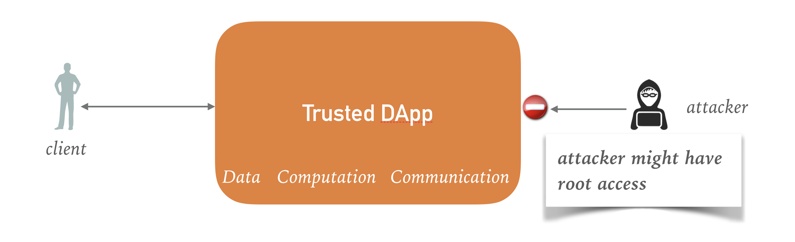
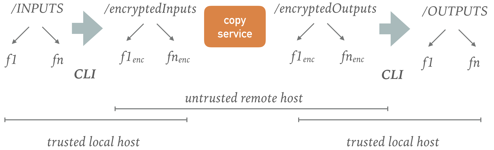

Trusted DApps with SCONE and iExec¶
This tutorial shows how to build a trusted DApp for the iExec platform. A DApp is a decentralized application that can be executed on hosts of a decentralized network. We recommend that you read the preceding tutorial pages first to learn about basic terminology and concepts of SCONE.
Trusted DApp¶
SCONE helps developers to protect the integrity as well as the confidentiality not only of data at rest (i.e., on disk) and data being transmitted but also all data stored in main memory. Note that any root user can easily dump the main memory of any application and in this way can gain secrets like the keys used to encrypt the data at rest.

By trusted DApp we refer to a DApp that executes inside a trusted execution environment (TEE) in such a way that not even an attacker with root rights can access the data of the application. SCONE simplifies to run applications inside of TEEs as well as to transparently encrypt and decrypt files. SCONE is designed to be independent of the actual TEE implementation. Right now -- since there is a lack of appropriate hardware alternatives -- SCONE supports only Intel SGX.
SCONE Platform¶
The SCONE platform helps to run DApps inside of TEEs without source code modifications. In this tutorial, we
-
describe how to build a simple application to run with SCONE inside of an enclave, i.e., inside an Intel SGX TEE,
-
show how to compile the simple trusted DApp with the help of an Alpine container,
-
how to deploy and execute inside of an Alpine container,
-
introduce the workflow of where and how data is encrypted, pushed to the application and then decrypted
-
explain how keys are managed and passed to a trusted DApp, and
-
show how to test this application on your own infrastructure.
Trusted copy DApp¶
We show how to implement a simple copy command as a trusted DApp. This is of course not a realistic DApp but it helps to show all steps necessary to build and run such an application.
The copy DApp copies files located in an input directory /INPUTS to an output directory /OUTPUTS of the client the machine.
With the help of SCONE, this copy DApp actually copies encrypted files such that the SCONE transparently decrypts and checks the integrity of files that are read by the application. This protects the confidentiality and integrity of the files without any need to change the application itself. Also, SCONE encrypts and integrity protects the files that are written by the application. Each file is encrypted with a random key generated and managed by SCONE inside the enclave.
With the help of a CLI (command line interface deployed in a container), a client can encrypt and push files stored on its client machine to the copy DApp. The copy DApp copies the files. The CLI can decrypt the files after the execution of the DApp.

We introduce the commands to perform this example below.
Encrypted Volumes¶
Containers support volumes as a way to persist data. Trusted DApps for the iExec platform have always two encrypted volumes mapped into their file system:
- an encrypted volume for input files mapped in the container in directory /encryptedInputs, and
- an encrypted volume for output files /encryptedOutputs.
We show below how the input files are encrypted with the help of the CLI and pushed to the container. Moreover, we show how to decrypt the files with the help of CLI.
To access an encrypted volume, one needs a key and a tag. The key is used the encrypt the individual keys of the files of the volume, i.e., it is used to protect the confidentiality of the files. The tag describes the current state of the volume. Any change of any file in the volume will result in a new tag. The tag is used to protect the integrity and freshness of the files:
- any unauthorized modification of the volume will be detected since the correct tag can only be computed by parties knowing the key of the volume (integrity protection).
- any rollback to older version of the volume will be correctly encrypted but will have an old tag. Hence, rollbacks to older versions will be detected (freshness protection).
Key and Tag Management¶
The copy DApp requires access to keys and tags to read the encrypted input files (i.e., the input volume) and to write the encrypted output files (i.e., the output volume). Passing the keys and tags to the copy DApp is non-trivial since we need to ensure that no other DApp or an attacker can read or modify the keys or the tags.
To pass the keys and tags to a trusted DApp, SCONE provides a configuration and attestation service (CAS). The CAS can ensure that only the copy DApp can access the keys and tags by verifying that it talks to an unmodified copy DApp. This process is called attestation and is performed with the help of the Intel SGX CPU extension.
Typically, such a trusted DApp is deployed with the help of a container image hosted on docker hub (or some similar repository). We recommend that these container images are signed using Docker content trust. Note that content trust is not sufficient to ensure that we talk to an unmodified copy DApp since 1) an attacker with root access could change this image on the host on which it is deployed, and 2) the copy DApp could not authenticate itself since it would need a private key of a certificate and this private key could be read by any entity that is permitted to access that image. Hence, if we were to use only content trust, an attacker could easily impersonate the copy DApp.
To attest a trusted DApp, we need to describe the state of this DApp. In general, this consists of a hash value that describes the trusted DApp (called MrEnclave) and a tag that describes the file systems state. In the case of the copy DApp, the file system (mounted at /) does not need to be attested - only the encrypted input volume (mounted at /encryptedInputs) and encrypted output volume (mounted at /encryptedOutputs) needs to be attested.
When a trusted DApp starts up, it connects to the CAS to perform an attestation. This attestation ensures that MrEnclave is the expected value and that the file system and the mounted volumes are in the correct state, i.e., the tags have the expected values.
A trusted DApp will typically write to the output volume. This will change the tag of the output volume. To ensure that a client can read the current state of the volumes written by a trusted DApp, the tags will be pushed to the CAS when a trusted DApp exits.
Attesting CAS¶
CAS is written in Rust, a safe and efficient programming language. The type-safety ensures that simple programming bugs can be exploited by attackers to hijack services. A client can attest a valid CAS in two ways:
- via the Intel attestations service, and/or
- via the certificates provided by CAS.
Right now, the CLI verifies that it talks to a correct CAS with the help of TLS. The client only uses TLS and verifies that the CAS has the correct certificate. Only a CAS will be able to get this certificate. In a later version, we will additionally ensure that the CAS provides a correct report by the Intel attestations service.
CAS is trusted, managed service: it can be operated by a provider but the provider is not able to access the sessions of the clients. Right now we run a public CAS service for debugging and testing. This CAS runs in debug mode, i.e., you should not use this CAS to pass secrets.
In case there would be a need for running a private CAS services, we will enable clients to run their own CAS. Please contact us if you want to run your own CAS or if you need access to CAS running in production mode.
Sessions¶
We need to specify the value of MrEnclave and the state (i.e., the tags) of the of the volumes and in the general case, also the file system. To do so, CAS supports a security policies. We call such a security policy a session.
A session specifies what volumes are mounted and where they are mounted, the keys and tags of these volumes and MrEnclave of the trusted DApp. For example, a session (template) could look like this:
name: $SESSION
digest: create
services:
- name: application
image_name: sconecuratedimages/iexec:copy_demo
mrenclaves: [e0f45a9a862c83f383730cc2aef144081025e3f925615da5b35c4d980faaa3c9]
tags: [demo]
command: /application
pwd: /
environment:
SCONE_MODE: hw
ZIP_URL: $URL
volumes:
- name: encrypted-input-files
fspf_tag: $INPUT_FSPF_TAG
fspf_key: $INPUT_FSPF_KEY
- name: encrypted-output-files
fspf_tag: $OUTPUT_FSPF_TAG
fspf_key: $OUTPUT_FSPF_KEY
images:
- name: sconecuratedimages/iexec:copy_demo
mrenclaves: [e0f45a9a862c83f383730cc2aef144081025e3f925615da5b35c4d980faaa3c9]
tags: [demo]
volumes:
- name: encrypted-input-files
path: /encryptedInputs
- name: encrypted-output-files
path: /encryptedOutputs
Note that in most cases you can start from a generic session template and you do not need to worry about the syntax and all the details of session descriptions.
Building an DApp¶
The source code of this application, you can retrieve from
git clone https://github.com/scontain/copy_dapp.git
cd copy_dapp
You can see that the source code (file copy_files.c) does not contain any specifics related to SCONE or SGX.
We build this program with the help of the standard gcc that is part of Alpine Linux (see the Dockerfile). For convenience, we provide an Alpine image (i.e., sconecuratedimages/muslgcc) that has gcc preinstalled.
FROM sconecuratedimages/muslgcc COPY copy_files.c / # compile with vanilla gcc RUN gcc -Wall copy_files.c -o /copy_files FROM iexechub/sgx-scone:runtime COPY --from=0 /copy_files /application RUN apk add curl bash unzip zip ENTRYPOINT ["/application.sh"]
To run the application inside of an enclave, we need the SCONE runtime environment. This runtime is part of image iexechub/sgx-scone:runtime. Moreover, this image contains a script /application.sh that pulls the input and output volumes from some transfer service, executes the application inside of an enclave. For testing, the script can push the encrypted output volume to a transfer service (see below).
The image sconecuratedimages/iexec:copy_demo
is built by the script build-image.sh. This script also determines
MrEnclave of the application and writes a session template copy_dapp.yml.
Testing¶
We now show how to execute a simple test program. After building the image by executing
./build-image.sh
We can execute this image on a SGX-capable host. This host has to have the SCONE local attestation service and Docker installed. We will describe in the installation section on how to install these prerequisites.
In what follows, we assume that the name of the host is stored in environment variable host.
SETUP¶
To execute We create an INPUTS directory and store some files there. We encrypt these files and push the zipped up files to transfer.sh.
Let's set up the INPUTS for our example
mkdir -p EXAMPLE cd EXAMPLE mkdir -p KEYS INPUTS OUTPUTS ZIP echo "Hello world" > INPUTS/f1.txt echo "Hello together" > INPUTS/f2.txt cp ../copy_dapp.yml KEYS/
Step 1¶
Let's execute the first step of encrypting the files and pushing these to the transfer service:
CMD=$(docker run -t --rm -v $PWD/KEYS:/conf -v $PWD/INPUTS:/inputs sconecuratedimages/iexecsgx:scone.cli encryptedpush --application sconecuratedimages/iexec:copy_demo -t /conf/copy_dapp.yml)
Let's look at the output:
echo $CMD
should result in an output like:
"cmdline": --sessionID 180713033312847980809017601/application --secretManagementService 87.190.236.136 --url https://transfer.sh/TPGzU/scone-upload
You can look in your browser at the URL to see the uploaded files!
Step 2¶
Before running this application on the iExec platform, we might want to test it on some SGX-capable host.
Ensure that the newest image is loaded on host. This step is only needed if it is expected that the image has changed since docker run does not pull/update the image.
ssh $host docker pull sconecuratedimages/iexec:copy_demo
Ensure that you are executing a bash shell (execute bash). Now, execute the command on host and we ask it to be pushed to transfer.sh:
URL=$(ssh $host docker run -t --device=/dev/isgx --rm sconecuratedimages/iexec:copy_demo ${CMD//[$'\t\r\n']} --push transfer.sh)
Let's look at the output:
echo $URL
this results in an output like:
https://transfer.sh/11yj8M/helloWorld.txt
You can now download this (if running a bash shell)
curl --output ZIP/encryptedOutputFiles.zip ${URL//[$'\t\r\n']}
Step 3¶
docker run -t --rm -v $PWD/KEYS:/conf -v $PWD/ZIP:/encryptedOutputs -v $PWD/OUTPUTS:/decryptedOutputs sconecuratedimages/iexecsgx:scone.cli decrypt
We can now look at the files in OUTPUT directory:
cat OUTPUTS/f1.txt
results in Hello world and
cat OUTPUTS/f2.txt
results in Hello together.
© scontain.com, October 2018. Questions or Suggestions?